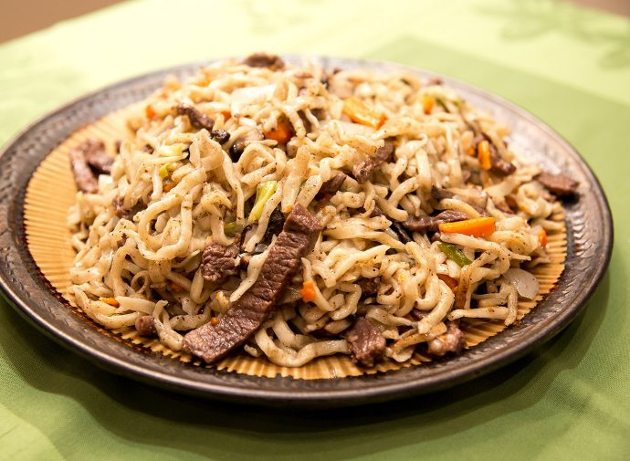

Tsuivan (Mongolia noodle with meat and vegetables)

Ingredients
Noodles:
- 2 1/2 cups (320 grams) all-purpose flour plus more for dusting
- 1 cup (240 milliliters) water
- Vegetable oil for rolling and cooking
Tsuivan:
- 1 onion peeled and thinly sliced
- 8 ounces (250 grams) mutton or beef cut into bite-size pieces
- Salt and pepper to taste
- 2 carrots cut into matchsticks
- 1 potato peeled and cut into matchsticks
- 1/4 green cabbage thinly sliced, optional
- 2 cloves garlic peeled and minced
- 3/4 cup (177 milliliters) water
- 2 green onions thinly sliced